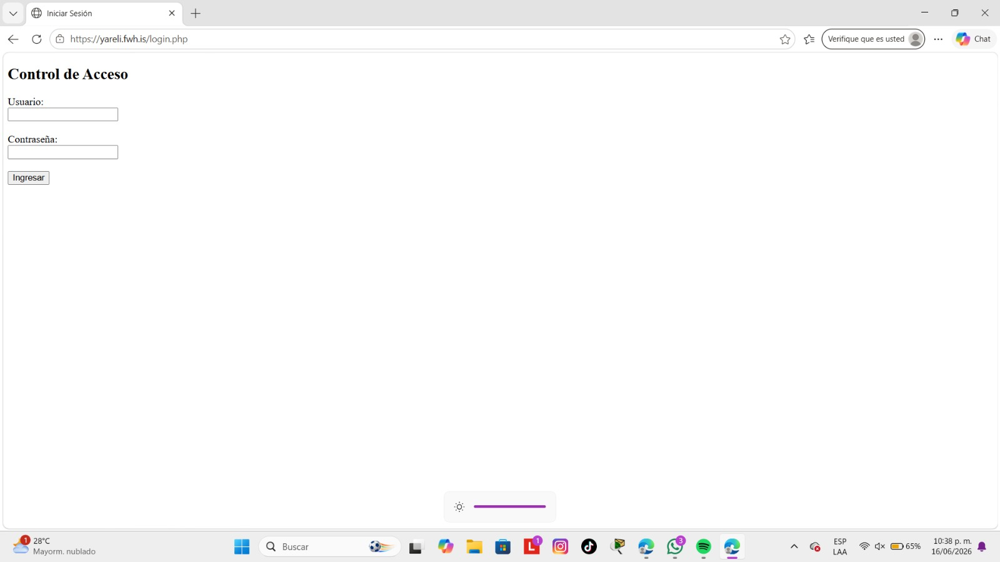
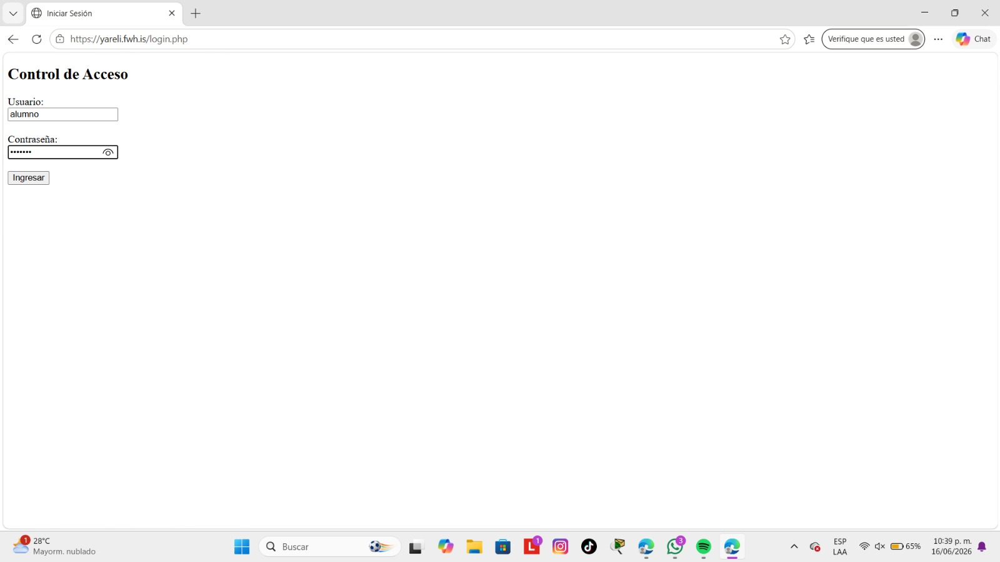
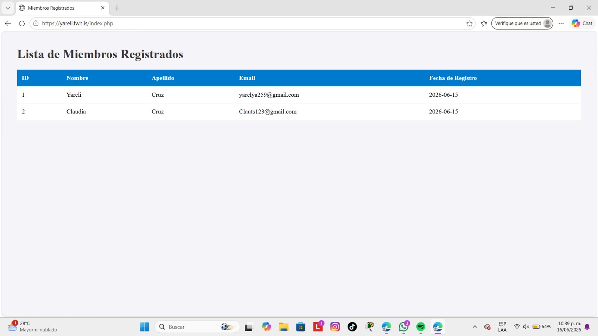

En esta práctica agregué un sistema de inicio de sesión para proteger la información. Creé una tabla llamada Usuarios donde se guardaban los nombres de usuario y contraseñas. Después desarrollé una pantalla de login donde el usuario debía ingresar sus datos para acceder al sistema. Si el usuario escribía correctamente sus credenciales, podía entrar; si no, aparecía un mensaje de error. También agregué una opción para cerrar sesión.
SELECT COUNT(*) FROM Usuarios WHERE Usuario = :user AND Clave = :pass;